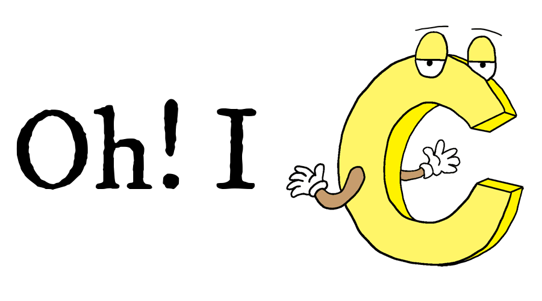

The C programming language as known to us today, was introduced in the early 1970s by Dennis M. Ritchie, and employee working for Bell Labs(AT&T). In 1960s, Ritchie worked with several other people on a project called Multics, the goal of which was to develop an operating system for a large computer that could be used by a thousand users. However, in 1969, AT&T withdrew from the project because the project was unable to produce an economically useful system. So, Ritchie and Ken Thompson started looking for another project to work on. Ken Thompson began to work on the development of a new file system. He wrote, a version of the new file system for the DEC PDP-7, in assembler.(The new file system was also used for the game Space Travel). Soon they began to make improvements and add expansions. (They used there knowledge from the Multics project to add improvements). After a while a complete system was born. Brian W. Kernighan called the system UNIX, a sarcastic reference to Multics. The whole system was still written in assembly code. Besides assembler and Fortran, UNIX also had an interpreter for the programming language B. ( The B language is derived directly from Martin Richards BCPL). The language B was developed in 1969-70 by Ken Thompson. In the early days computer code was written in assembly code. To perform a specific task, you had to write many pages of code. A high-level language like B made it possible to write the same task in just a few lines of code. The language B was used for further development of the UNIX system. Because of the high-level of the B language, code could be produced much faster, then in assembly. A drawback of the B language was that it did not know data-types. (Everything was expressed in machine words). Another functionality that the B language did not provide was the use of “structures”. The lag of these things formed the reason for Dennis M. Ritchie to develop the programming language C. So in 1971-73 Dennis M. Ritchie turned the B language into the C language, keeping most of the language B syntax while adding data-types and many other changes. The C language had a powerful mix of high-level functionality and the detailed features required to program an operating system. Therefore many of the UNIX components were eventually rewritten in C (the Unix kernel itself was rewritten in 1973 on a DEC PDP-11). The programming language C was written down, by Kernighan and Ritchie, in a now classic book called “The C Programming Language, 1st edition”. (Kernighan has said that he had no part in the design of the C language: “It’s entirely Dennis Ritchie’s work”. But he is the author of the famous “Hello, World” program and many other UNIX programs). For years the book “The C Programming Language, 1st edition” was the standard on the language C. In 1983 a committee was formed by the American National Standards Institute (ANSI) to develop a modern definition for the programming language C (ANSI X3J11). In 1988 they delivered the final standard definition ANSI C. (The standard was based on the book from K&R 1st ed.). The standard ANSI C made little changes on the original design of the C language. They had to make sure that old programs still worked with the new standard). Later on, the ANSI C standard was adopted by the International Standards Organization (ISO). The correct term should there fore be ISO C, but everybody still calls it ANSI C.
Click here to check out Wikipedia for more information

| C | Java |
|---|---|
| C is procedural | JAVA is Object-Oriented |
| C is a compiled language | Java is an Interpreted language |
| C is a low-level language | JAVA is a high-level language |
| C requires explicit handling of pointers | Pointer go backstage in JAVA |
| User-Based Memory Management in C | Behind-the-scenes Memory Management with JAVA |

C was initially used for system development work, in particular the programs that make-up the operating system. C produces code that runs nearly as fast as code written in assembly language.
public class HelloWorld {
public static void main(String[] args) {
System.out.println("Hello World");
}
}
#include <stdio.h>;
int main() {
printf("Hello World");
return 0;
}
